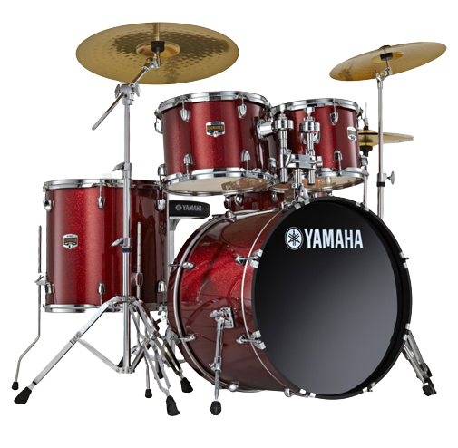

La Batterie
Instrument regroupant de nombreuses percussions, la batterie comporte aussi bien des symbales que
des futs disposés de sorte
qu'une personne seule puisse y jouer. Elle est utilisée dans tout les styles de musique et sert
de base rythmique. Seuls quelques éléments
changent en fonction du style joué, on peut par exemple ajouter des fûts et des doubles pédales.
L'instrument apparait au XXeme siècle
en Amerique du nord, en même temps que la naissance du Jazz et de tout ses dérivés comme le
blues.
pour plus d'information concernant l'historique ->
wikipédia